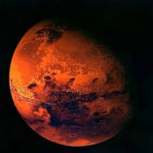
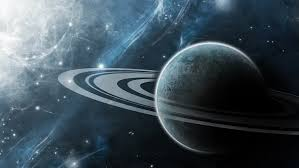

Головна
Головна
Сонце

Сонце

Меркурій

Венера

Земля

Місяць

Марс

Юпітер

Сатурн

Уран

Нептун

Плутон

Центральне тіло нашої планетної системи – Сонце . Утіленням Сонця в грецькій міфології був бог Апполон.У надрах Сонця за температури в десятки мільонів градусів Цельсія та величезного тиску відбуваються так звані термоядерні реакції .

Вони супроводжуються виділенням великої кількості енергії. Щосекунди Сонце випромінює таку кількість тепла, якого б вистачило розтопити шар льоду заввишки тисячу кілометрів.Термоядерні реакції продовжуватимуться, поки в ядрі Сонця не вичерпаються запаси Гідрогену. Нині вони складають близько 60 % маси Сонця. Такої кількості вистачить щонайменше на кілька десятків мільярдів років.

Наше Сонце – джерело не тільки тепла та світла. Його зовнішні зони – фотосфера, хромосфера та корона – випромінюють потоки невидимих ультрафіолетових і рентгенівських променів, які впливають на характер процесів у земній атмосфері. Ще багато років тому вчені помітили, що активність Сонця підпорядковується своєрідним циклам, протягом яких вона досягає максимального значення, а потім знову спадає. Це відбувається приблизно кожні 11 років. У роки максимальної сонячної активності збільшується кількість плям та спалахів на поверхні світила, невидиме випромінювання досягає найбільшої інтенсивності. У цей час на Землі виникають магнітні бурі, відбуваються порушення радіозв’язку.
Характеристики Сонця